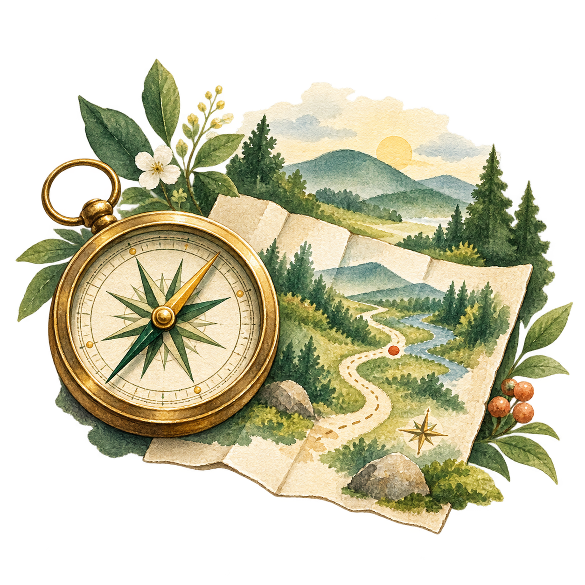
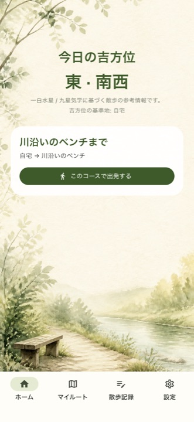
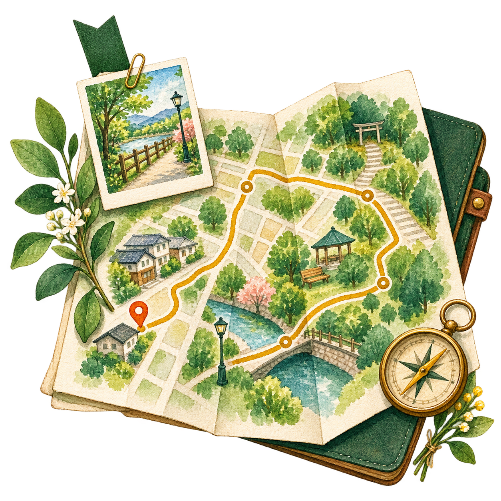
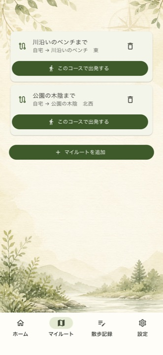
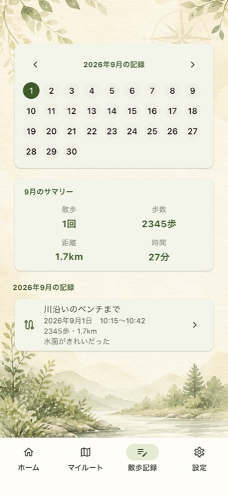
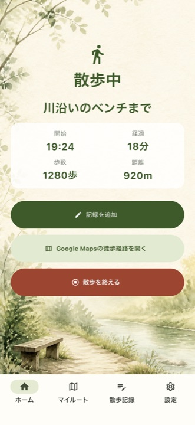

今日の吉方位を
参考にする
九星気学に基づく今日の吉方位を表示。行き先を考えるときの、ひとつの目印になります。
散歩を始めるためのアプリ
吉みちは、今日の吉方位を参考に、保存した散歩コースから歩く道をひとつ決めるアプリです。
無料で利用できます。方位を使わず、保存したマイルートから直接出発することもできます。

01 / ABOUT
吉みちは、今日の吉方位を参考に、保存したマイルートから歩くコースを選び、徒歩経路へ進んで散歩の記録を残せるアプリです。
行き先が決まらない日も、歩くことを習慣にしたい日も。すでに知っている道を「今日はここ」と選べるから、準備に時間をかけずに出発できます。
吉みちの特徴を見る02 / FEATURES
吉方位を参考にする日も、いつものコースを選ぶ日も。散歩を始めるために必要なことを、ひとつの流れにまとめています。

九星気学に基づく今日の吉方位を表示。行き先を考えるときの、ひとつの目印になります。

出発地、目的地、経由地、気分のタグを保存。近所の好きな散歩コースを、いつでも呼び出せます。
選んだコースの徒歩経路を、外部の地図アプリまたはブラウザで開きます。Google Mapsを優先します。
歩数・距離・時間、気分やメモを記録。過去の散歩をカレンダーや一覧から振り返れます。
03 / HOW IT WORKS
最初に設定して、道を保存する。あとはその日の気分で、歩くコースを決めます。
今日の吉方位を表示するための情報を、端末内に設定します。
名前をつけて、好きな散歩コースをマイルートに残します。
徒歩経路を開き、歩いたあとに記録を残します。
04 / IN THE APP
情報を詰め込みすぎず、今日やることが見える画面に。吉みちの5つの画面を、散歩の流れに沿って紹介します。
ホーム画面では、今日の吉方位と保存したマイルートを一緒に確認できます。条件に合うコースがある日も、方位を気にせず選ぶ日も、出発する道は自分で決められます。

近所の公園まで、川沿いのベンチまで。名前をつけて保存したコースは、次の散歩の候補になります。新しい道を探す前に、まずは自分のマイルートから。
散歩中の歩数・距離・経過時間を確認し、気分やメモを残せます。あとからカレンダーや一覧で見返せるので、歩いた日が静かに積み重なります。
保存と位置情報について

05 / SAFETY & PRIVACY
吉みちは、散歩のきっかけをつくるためのアプリです。方位や計測値を、何かを保証するものとして扱いません。
九星気学に基づく方位を表示しますが、開運や健康効果を保証するものではありません。
常時位置を追跡する設計ではありません。現在地を使う場面では、iPhoneの許可設定に従います。
ログインやクラウド同期を前提にせず、保存したコースや散歩記録を端末内で扱います。
交通状況、天候、道路の安全、体調を確認し、無理のない範囲で利用してください。
06 / FAQ
吉方位、位置情報、保存コースについて。使い始める前に知っておきたいことをまとめました。
吉みちでは、九星気学に基づく方位を、散歩の行き先を考えるときの参考情報として表示します。開運や健康効果を保証するものではありません。
はい。吉方位を参考にせず、保存したマイルートから好きな散歩コースを選んで出発できます。
いいえ。吉みちは常時GPSで位置を追跡する設計ではありません。現在地を使う場面では、iPhoneの許可設定とアプリ内の説明に従います。
吉みちは道路に沿った周回コースを自動生成するアプリではありません。あらかじめ保存したマイルートから、今日歩くコースを選びます。
初期版はiPhone向けです。iPadではiPhone版をそのまま利用する構成を予定しています。
07 / START YOUR WALK
無料で利用できます。 Google Playで公開中です。